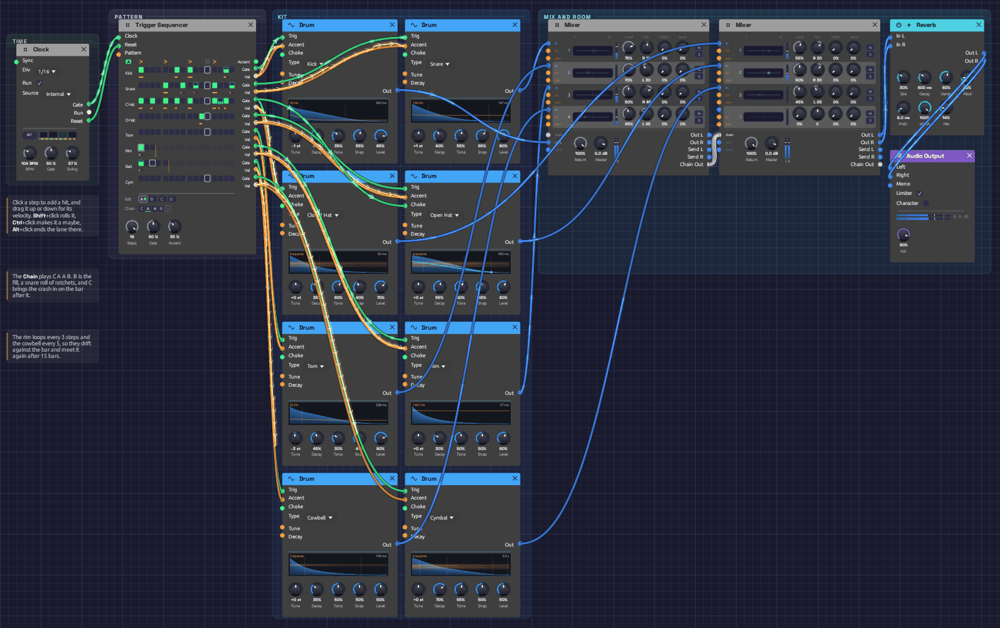

Roll Call
A full drum kit on one Trigger Sequencer: eight Drum voices, each on its own lane, with ghost notes, hat rolls, a snare-roll fill every fourth bar and a crash on the bar after it. The whole patch is 14 modules. Drum Machine needs a Step Sequencer for every drum to play five; here one module plays eight, and changes pattern for the fill by itself. It plays itself; press Play and let it run.
*Or play it here: press **▶ Play** in the corner. The full app is a click away under **Open in Modular**.*Load it: choose 📚 Examples → Roll Call in the toolbar and press ▶ Play. It needs no keyboard. The patch file is
patches/roll-call.json.

The Clock, then the Trigger Sequencer, whose eight lanes fan out to the kit two drums at a time: kick and snare, closed and open hat, tom and rim, cowbell and cymbal. Two Mixers, a room and the output sit at the right.What it teaches
- One sequencer, a whole kit. Each lane's Gate strikes a Drum and its Vel sets the Drum's Accent. The lanes take their names from the drums they play.
- Patterns in a chain. The Chain plays
C A A B: the groove twice, a fill, and the groove with a crash. Every change lands on a bar line. - Ratchets. Rolls are single steps split into two, three or four hits.
- Probability. Some ghost notes and hat rolls play only some of the time, so the loop never quite repeats.
- Polymeter. The rim loops every 3 steps and the cowbell every 5, against a 16-step bar.
The patterns
Sixteen steps a bar at 104 BPM, swung at 57%. X is a full hit, x a softer one, g a ghost note, ? a hit that plays only sometimes. A digit is a ratchet, that many hits in the step. > marks an accent.
A, the groove:
step 1 . . . 5 . . . 9 . . . 13. . .
accent > . . . > . . . > . . . > . . .
kick X . . . . . x . X . . . . . ? .
snare . . . . X . . g . ? . . X . . ?
c hat X . x . X . x . X . . . X 3 x .
o hat . . . . . . . . . . x . . . . .
The closed hats' roll on step 14 plays three soft hits, 40% of the time. The kick's pickup on 15 and the snare's ghosts on 10 and 16 come and go too.
B, the fill, keeps the first half of the groove and turns the rest into a roll:
step 1 . . . 5 . . . 9 . . . 13. . .
accent > . . . > . . . > . . . > . . >
kick X . . . . . x . X . . . . . . .
snare . . . . X . . g . . 2 2 3 3 4 4
tom . . . . . . . . . x . x . . . .
c hat X . x . X . x . X . . . . . . .
The snare roll builds from soft doubles to full fours, and two toms answer it. The last step is accented, a push into the downbeat.
C is A with a crash on the downbeat. Coming round after B, it lands where a drummer's crash would.
The rim plays one quiet hit every 3 steps, and the cowbell one every 5, three times in four. Neither fits a bar of 16, so they fall on different steps every bar and line up with it again only after 15 bars, while the groove underneath stays put.
Modules
| Module | Settings |
|---|---|
| Clock | BPM 104, Div 1/16, Gate 50%, Swing 57% |
| Trigger Sequencer | Steps 16, Gate 50%, Accent 35%. Chain C A A B. Rim lane 3 steps long, cowbell lane 5 |
| Drum (kick) | Type Kick, Tune -1 st, Decay 45%, Tone 35%, Snap 55%, Level 85% |
| Drum (snare) | Type Snare, Tune +1 st, Decay 40%, Tone 55%, Snap 65%, Level 80% |
| Drum (closed hat) | Type Closed Hat, Decay 35%, Tone 60%, Snap 40%, Level 70% |
| Drum (open hat) | Type Open Hat, Decay 55%, Tone 60%, Snap 45%, Level 60% |
| Drum (tom) | Type Tom, Tune -3 st, Decay 45%, Tone 30%, Snap 40%, Level 80% |
| Drum (rim) | Type Rim, Decay 30%, Tone 50%, Snap 50%, Level 60% |
| Drum (cowbell) | Type Cowbell, Decay 35%, Tone 50%, Snap 50%, Level 50% |
| Drum (cymbal) | Type Cymbal, Decay 70%, Tone 55%, Snap 50%, Level 50% |
| Mixer (skins) | Snare 75% at R 10, tom 70% at L 30, rim 50% at R 45, cowbell 45% at L 45; the kick on Chain L |
| Mixer (metal) | Closed hat 55% and open hat 50% at R 30, cymbal 45% at L 25; the skins Mixer on Chain L/R |
| Reverb | Size 30%, Decay 0.6 s, Damp 60%, PreD 8 ms, Mix 14% |
| Audio Output | Vol 90% |
How it's built
Eight lanes
[Clock Gate] ──> [Trigger Sequencer Clock]
[Clock Reset] ──> [Trigger Sequencer Reset]
[Trigger Sequencer Gate n] ──> [Drum n Trig]
[Trigger Sequencer Vel n] ──> [Drum n Accent]
[Trigger Sequencer Gate 3] ──> [Open Hat Choke]
Every lane is two cables to its Drum. The closed hat's Gate also chokes the open hat, so the open hat on step 11 rings only until the closed hat on 13.
Accents raise the velocity of every hit on beats 1 to 4 a third of the way to full, so the downbeats lean forward without any lane being louder overall.
Two mixers
Five drums go to the first Mixer: the kick on its Chain L, which puts it in the centre, and the snare, tom, rim and cowbell on its four channels. That Mixer's output comes into the second one's Chain L/R, which adds the hats and the cymbal and sends the whole kit through a small room.
Try this
Edit the groove. Click a pad to add or remove a hit, drag it for velocity, or Shift + click it for a roll. Each change is one undo step.
Write your own fill. Right-click the A tab and copy it to D. Change D's last bar-quarter, then click the Chain's last bar until it reads D.
Longer phrases. Click + under the Chain to add bars. C A A B A A A B waits eight bars for the crash.
Straight time. Turn the Clock's Swing to 50% for a programmed feel, or 62% for a lazier one.
A different polymeter. Right-click the rim's name and pick 7: its figure now meets the bar after 7 bars.
Choose the pattern by hand. Patch an Attenuverter's output into Pattern and turn its Offset: 0 plays A, 0.3 plays B, 0.6 plays C. The change waits for the next bar.
Related
- Trigger Sequencer – the grid, the Chain, ratchets, probability and polymeter
- Drum – each type, what its knobs do, and how a choke works
- Drum Machine – a kit on five Step Sequencers, with tuned toms
- Clock – tempo and swing